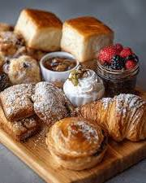

Something for every kind of day

A softer start.
Explore breakfast and pastries

Celebrate your way.
Explore custom treats

Break bread together.
Explore our bread selection

Good things, baked close to home
Sweet Clover is a local bakery and custom dessert shop in Maryville, Missouri. For a break between classes, a treat to bring home or a reason to gather, theres a sweet place to start.
5 Ways to Find Your Perfect Bakery Treat
Sweet Clover Bakery offers something for every occasion. Explore five ways to enjoy our freshly baked selection in Maryville, Missouri.
| Bakery Offering | Best For | What You'll Find |
|---|---|---|
| 1. Breakfast and Pastries | A morning treat | Croissants, cinnamon rolls, muffins, and seasonal scones. |
| 2. Freshly Baked Breads | Everyday meals | Sourdough, honey wheat, rosemary garlic focaccia, and cinnamon raisin bread. |
| 3. Cookies and Treats | A sweet snack | Chocolate chip cookies, sugar cookies, brownies, and oatmeal cream pies. |
| 4. Seasonal Specials | Seasonal celebrations | Rotating seasonal scones, cupcakes, cookies, and specialty cakes. |
| 5. Custom Cakes and Desserts | Special occasions | Birthday cakes, wedding desserts, decorated cookies, and dessert boxes. |
Ready to find your favorite? Explore our full bakery menu or contact us about a custom order.
5 Best Sweet Treats to Find at Sweet Clover Bakery
Sweet Clover Bakery in Maryville, Missouri, offers breakfast pastries, custom desserts, and baked goods for everyday treats and special occasions.
-
Breakfast Pastries
Explore breakfast pastries and muffins for a delicious morning treat.
-
Custom Cakes
Order custom cakes for birthdays and special occasions.
-
Cookies
Find cookies for everyday treats and gatherings.
-
Cupcakes
Consider cupcakes for parties and celebrations.
-
Dessert Boxes
Ask about custom dessert boxes for sharing and special occasions.
-
Fresh Bread
Explore the bakery's bread selection.
Frequently Asked Questions
Do you offer delivery?
At this time, Sweet Clover offers bakery pickup. Delivery may be available for select large orders by special arrangement.
Do you accept custom orders?
Yes. We offer custom cakes, cookies, cupcakes, and dessert boxes for a variety of occasions.
How far in advance should I place a custom order?
We recommend placing custom orders at least seven days in advance.
Do you offer gluten-free products?
We offer select gluten-free items. Because our bakery handles wheat and other allergens, we cannot guarantee an allergen-free environment.
Do you make wedding cakes?
Yes. Wedding cakes and dessert tables are available by consultation.
Make room for a bakery stop
Address
123 Main Street, Maryville, MO 64468
Hours
Monday: 7:00 a.m.–3:00 p.m.
Tuesday: 7:00 a.m.–3:00 p.m.
Wednesday: 7:00 a.m.–3:00 p.m.
Thursday: 7:00 a.m.–5:00 p.m.
Friday: 7:00 a.m.–5:00 p.m.
Saturday: 8:00 a.m.–2:00 p.m.
Sunday: Closed
Get in touch with Sweet Clover Bakery for questions or custom orders